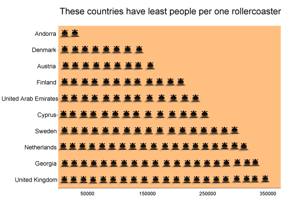

Photo: Linnanmäki
Photo: Linnanmäki
Avoid lines, go to Denamrk or Austira
These countries have most rollercoasters compared to the size of their population. Here we can see that tiny Andorra leads, even they only have few rollercoasters. But Denmark, Austria and Finland seem really to love rollercoasters.
Saudi Arabia is famous for indoor amusement parks, so they make it to top 10 as well. Biggest surprise might be Georgia; 12 rollercoasters for 10 000 000 people!
>

Sources: rcdb.com, undata
These countries have only one rollercoaster for over 14 million inhabitants
If you are a fan of rollercoasters, Africa is not a continent to go. Nigeria has most rollercoasters of these countries in here. But seven rollercoasters is nothing for the population over 190 miilion.

Sources: rcdb.com, undata